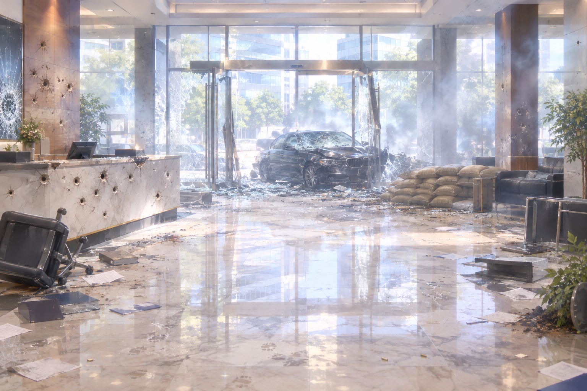

Background art for a Japanese visual novel game. A real photograph processed with a soft painterly filter: smoothed textures, gentle bloom and glow, bright soft colors, slightly hazy, like a photo converted into an anime-style background. Scene: the ground-floor entrance lobby of a modern corporate office building right after a fierce gunfight, polished marble floor and a reception counter riddled with bullet holes, shattered glass doors, scattered documents, overturned furniture, sandbags, smoke haze, a black sedan crashed into the lobby. Daytime light from outside. Eye-level camera, wide shot, centered composition with empty space in the middle for characters. No people, no text overlays, no watermark.
